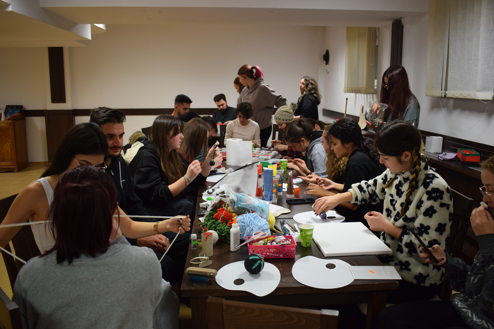
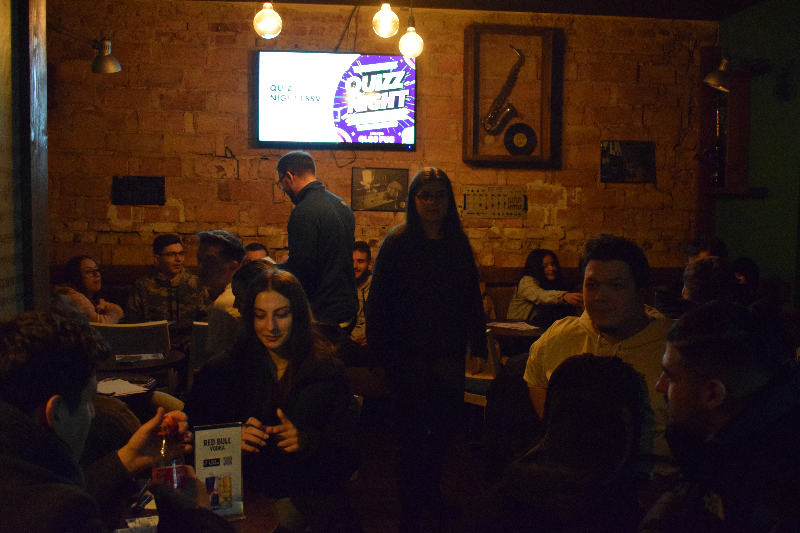
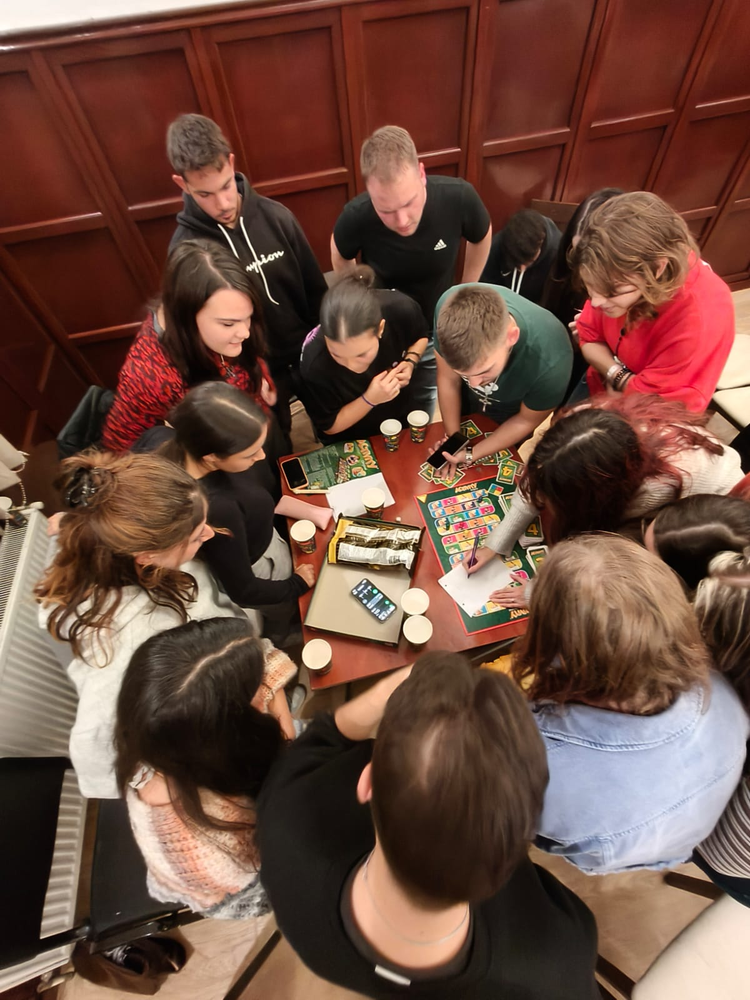
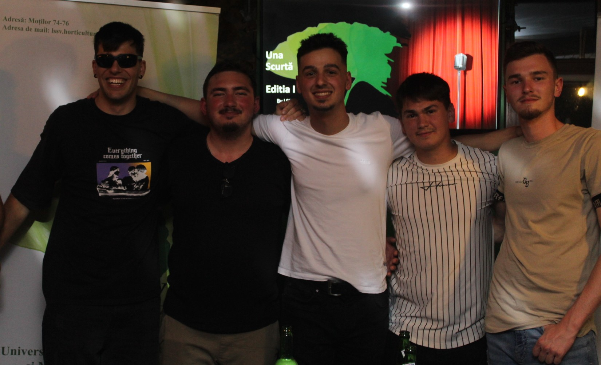

Karaoke
Karaoke Night LSSV este momentul în care studenții lasă emoțiile la ușă și își dau voie să se exprime liber, prin muzică,
energie și voie bună. Este acel tip de seară în care hiturile preferate capătă o nouă viață, prieteniile se leagă mai ușor, iar atmosfera devine un mix perfect de spontaneitate și amuzament.
Indiferent dacă ești pasionat de muzică, îți place să faci show sau doar vrei să te relaxezi într-un cadru relaxat, karaoke-ul LSSV aduce pe scenă tot ce ai nevoie: ritm, râsete, încurajări și
multe momente memorabile. E locul ideal în care fiecare are șansa să strălucească, fără a fi nevoie de talent profesional — doar de chef de distracție.
Karaoke Night LSSV transformă simplul
cântat într-o experiență comună, plină de energie și good vibes, care apropie comunitatea studențească și celebrează bucuria de a fi împreună.

Quiz Night
Quiz Night LSSV este momentul ideal pentru studenții care adoră provocările, întrebările istețe și atmosfera plină de energie. Este
seara în care echipele se formează rapid, strategiile se conturează spontan, iar fiecare răspuns devine o mică victorie împărtășită cu prietenii.
Indiferent dacă ești genul care știe toate
detaliile din filme, ține minte date istorice sau excelează la cultura generală, Quiz Night LSSV aduce un mix variat de întrebări care pun la încercare mintea și stârnesc conversații amuzante. Pe
lângă competiția prietenoasă, atmosfera este una relaxată, plină de entuziasm și momente neașteptate.
Quiz Night LSSV transformă o seară obișnuită într-o experiență interactivă, unde te distrezi,
înveți ceva nou și îți descoperi spiritul competitiv alături de întreaga comunitate studențească.

Movie Night
Movie Night LSSV este momentul perfect în care studenții lasă agitația zilei în urmă și se adună într-un spațiu relaxat,
gata să intre împreună în lumi pline de aventură, emoție sau umor. Este seara în care filmele devin pretextul ideal pentru a împărtăși reacții, replici preferate și discuții care pornesc natural,
între prieteni.
Fie că ești cinefil convins, că îți place să descoperi povești noi sau pur și simplu vrei să petreci câteva ore într-o atmosferă cozy, Movie Night LSSV aduce tot ce ai nevoie: vibe
cald, confort, popcorn și companie bună. Aici nu e vorba doar despre vizionarea unui film, ci despre experiența comună — râsete, surprize, suspans și momente împărtășite.
Movie Night LSSV
transformă o seară obișnuită într-o pauză binevenită, în care comunitatea se strânge laolaltă pentru a se bucura de magie cinematografică și de sentimentul că ești parte dintr-un grup în care te
simți acasă.

Board Games
Board Games Night LSSV este momentul în care studenții renunță la cursuri și proiecte pentru a intra într-o lume plină de
joc, competiție amicală și hohote de râs. Este seara perfectă pentru a descoperi jocuri noi, a testa strategii ingenioase și a-ți pune spiritul de echipă la încercare — totul într-o atmosferă
relaxată și prietenoasă.
Nu contează dacă ești maestru în jocuri de societate sau doar curios să încerci ceva diferit: Board Games Night LSSV aduce împreună toate tipurile de jucători. Aici vei
găsi de la jocuri clasice și ușor de învățat, până la titluri care scot la iveală tacticianul din tine. Iar pe lângă jocuri, te așteaptă și conversații spontane, alianțe temporare și momente amuzante
care rămân mult timp în amintire.
Board Games Night LSSV transformă o seară obișnuită într-una plină de conexiuni, energie bună și bucuria de a împărtăși jocul cu ceilalți. Este locul ideal în
care distracția începe pe tabla de joc și continuă în comunitatea care se strânge în jurul ei.

Una Scurtă
Una Scurtă este seara în care microfonul devine aliat, emoțiile dispar, iar studenții se transformă în povestitori amuzanți,
gata să stârnească râsete și bună dispoziție. Conceptul este simplu: fiecare urcă pe scenă cu „o scurtă” – fie că e o glumă, o pățanie din cămin, o replică genială auzită în amfiteatru sau un moment
de autoironie savuroasă.
Atmosfera este relaxată, prietenoasă și plină de energie, perfectă pentru a descoperi umorul autentic din comunitatea LSSV. Fără pretenții, fără scenarii complicate — doar
spontaneitate, creativitate și multe momente memorabile.
Una Scurtă LSSV aduce studenții împreună într-o seară în care râsul devine limbaj comun, iar poveștile scurte creează conexiuni lungi.

Bătaie cu Apa
Bătaie cu Apă este evenimentul care aduce vara mai aproape, indiferent de anotimp, și transformă studenții în cea mai haioasă armată
înarmată cu pistoale cu apă, baloane și multă energie. Este momentul perfect în care stresul dispare, grijile se topesc și locul lor este luat de râsete, alergătură și distracție pură.
În mijlocul
unei atmosfere relaxate și jucăușe, participanții se bucură de adrenalină și competiție prietenoasă, totul într-un cadru sigur și plin de voie bună. Fie că vrei să-ți demonstrezi abilitățile
strategice, fie că pur și simplu îți dorești o experiență amuzantă alături de prieteni, „Bătaie cu Apă” promite momente memorabile și o doză serioasă de good vibes.
Bătaie cu Apă LSSV readuce
bucuria jocurilor simple, spontane și pline de energie, care apropie comunitatea și transformă o zi obișnuită într-un val de distracție.
Crișan Florin
Coordonator Evenimente
fc670542@gmail.com | +40 761 243 979
Sunt Crișan Florin, o persoană motivată, prietenoasă și sociabilă, care nu renunță niciodată în fața provocărilor. Îmi place să inspir oamenii din jur și să le ofer șansa să se afirme și să își descopere adevăratul potențial. Cred cu tărie că fiecare persoană are resurse și talente ascunse, iar motto-ul meu, „Nu judeca pe nimeni, toată lumea are un potențial ascuns”, reflectă modul în care privesc relațiile și echipa. Implicarea mea în proiecte vine cu entuziasm și deschidere, iar pentru mine este important să creez un mediu în care oamenii se simt susținuți, motivați și încurajați să dea ce au mai bun.

Mureșan Radu
Coordonator Logistică
radudan09@gmail.com | +40 755 582 302
Sunt Radu, o persoană organizată, energică și omul pe care te poți baza atunci când e nevoie ca totul să fie pus la punct. Îmi place să anticipez nevoile echipei, să găsesc soluții rapide și să mă asigur că fiecare proiect are fundamentul solid de care are nevoie pentru a reuși. Atenția mea la detalii și felul în care coordonez lucrurile din spate fac ca ideile să se transforme în acțiuni clare și eficiente. Pentru mine, eficiența și dinamismul sunt cheia unui proiect bine realizat.